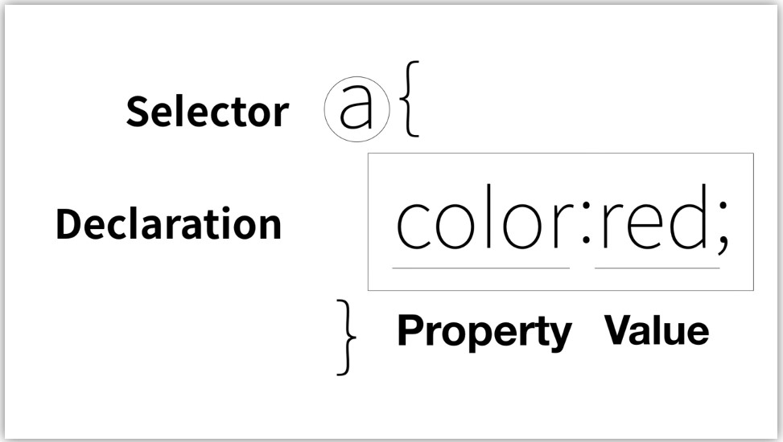

2주차
1주차의 학습 목표는 css에 대한 강의를 모두 듣고, css에 대한 전반적인 내용을 이해 하는 것이다.
1. CSS의 필요성
1주차에서는 웹페이지 구성을 위해 핵심적인 역할을 하는 html에 대해 공부 하였다. 하지만 이러한 html을 이용한 웹페이지 코딩에는 글씨의 크기, 색상, 정렬 과 같은 미적인 요소들을 설정하기에는 부족함이 있는데, 이러한 미적인 요소들을 설정하기 위해서는 2가지 방법을 도입할 수 있다. 첫번째는, 미적인 요소들을 설정하는 태그를 추가적으로 도입하는 방법이고, 두번째는 CSS라는 새로운 언어를 만드는 것이다.
첫번째 방식인 태그를 이용한 방법으로는 한계가 존재한다. 태그를 추가적으로 사용하기 때문에 만약, 1억개의 a 태그의 글자색을 바꾼다고 하면 일일이 해당 태그 옆에 글자색변경에 해당하는 태그를 추가 해주어야한다. 이러한 한계 때문에 최근에는 이러한 태그를 사용하지 않고 css를 사용한다.
2. CSS의 기본적인 문법
css에는 기본적인 문법이 존재 하는데 아래의 그림을 통해 CSS가 어떻게 구성되는 지 알 수 있다.
Selector에 해당하는 부분은 어떤 태그에 CSS를 적용할지 선택하는 기능으로 작동한다. Declation은 어떻게 바꿀것인지
선언을 하는 선언부에 해당하는데 이는 Property와 Value로 이루어져 있다.

웹 프로그래밍을 할 때는 일반적으로 핵심적인 내용들은 html이 담당하고, 미적인 요소들은 CSS가 담당한다고 할 수 있다. 하지만 실제로 페이지가 만들어질 때는 두가지의 언어를 같이 사용하고 있기 때문에, 이 두가지 언어들 사이에 구분이 필요하다. 이를 위해서 CSS가 사용될 때는 Style이라는 태그를 사용하여 html과 CSS를 구분하고, 하나의 속성으로써 CSS가 사용 될때는 태그 안에서 style을 속성의 개념으로 사용하여 CSS를 사용할 수 있다.